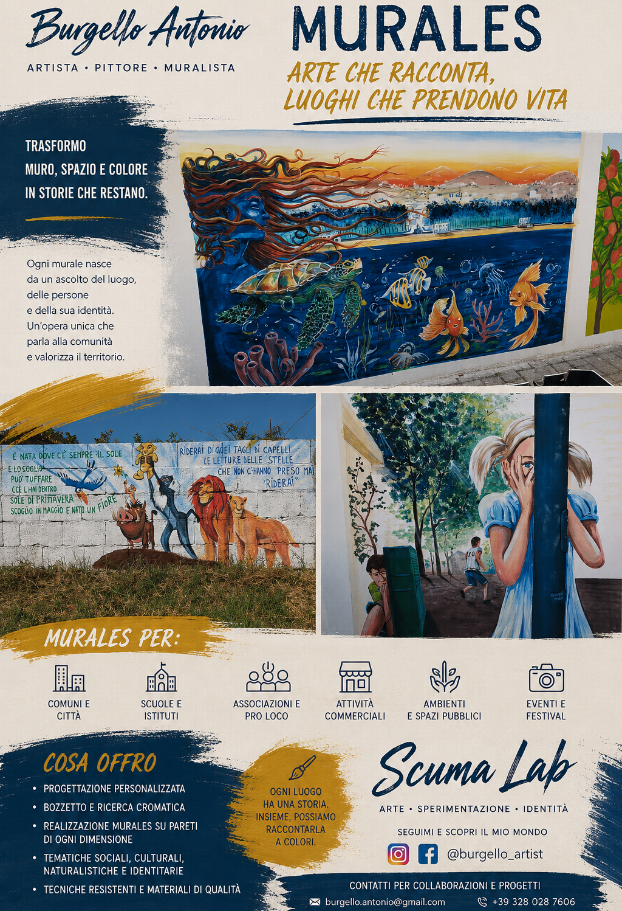
Su commissione
Murales
Dei miei murales sempre in diverso stile, ricerca iconografica e storica.
Luoghi, incontri e materia diventano arte.
Parto dalla pittura, ma è la materia a decidere dove andare.
Ogni idea cerca il proprio linguaggio: sulla tela, nel muro, negli oggetti, nello spazio.
Un viaggio dentro il mio mondo
Non troverai soltanto opere da guardare.
Troverai ciò che le ha fatte nascere.
Un luogo, un incontro, un'esperienza, una ricerca possono diventare un'idea.
L'idea diventa materia, la materia diventa opera, e l'opera torna poi nel mondo, attraverso una mostra, una strada, un borgo, un progetto o un incontro.
Puoi seguire questo viaggio attraverso le diverse sezioni del mio mondo.
Non è un archivio di ciò che ho fatto.
È la traccia di ciò che sta diventando.
Opere
Olio a spatola, acrilico, acquerello. Paesaggi che ho attraversato, notturni che non mi hanno lasciato dormire, oggetti che hanno insistito per essere dipinti.
Frammenti di vita
Nessun racconto fiabesco. Soltanto ciò che il vortice della vita ha portato, finché la pittura non è diventata il modo migliore per parlare col mondo.
Maggio 2018 · Londra
Prima della prima mostra personale, nel castello di Somerset House.
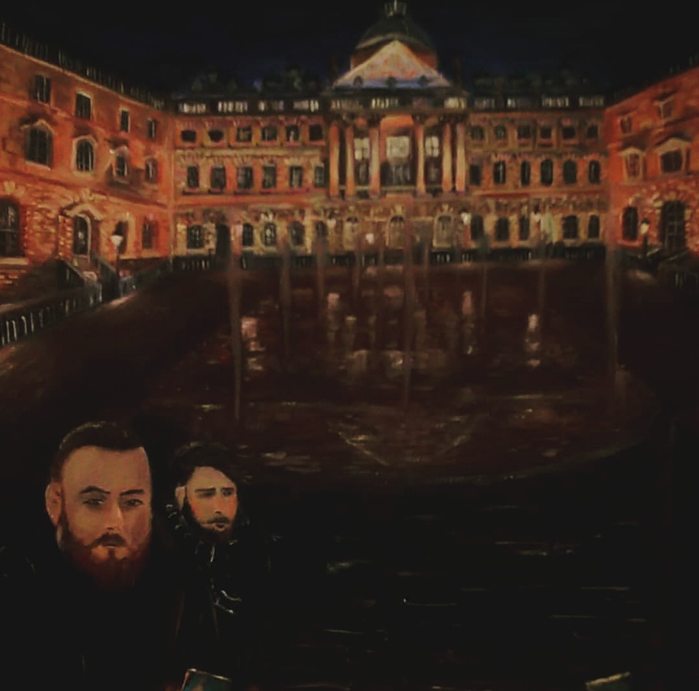
2012-2019
Ero a Londra e lavoravo spesso: alcune volte facevo dalle dieci alle undici ore al giorno, più quelle per tornare a casa. Non mi restava molto per cenare la sera, però ricordo che durante le ore diurne il mio cervello si caricava di pensieri, idee e immaginazioni.
Iniziai a scrivere, prima di tutto diari: in un anno son diventati tre, poi quattro, fino a che a un certo punto avevo bisogno di visualizzare anche ciò che scrivevo. Avevo bisogno di materializzare tutto, e non solo metterlo a parole.
In quei primi anni avevo fatto tantissime fotografie e avevo scritto parecchio, ma per questioni di spazio e di soldi non avevo mai messo nulla al computer. Quando i miei guadagni migliorarono e potei permettermi strumenti e materiali, cominciai a dare forma a qualcosa che avevo dentro da tempo.
Sentivo che non mi bastava raccogliere e organizzare. Avevo bisogno di creare.
Così, con pochi soldi in tasca, entrai in un art shop a Covent Garden. Ricordo ancora quella sensazione: avevo voglia di ricominciare a dipingere, ma allo stesso tempo avevo paura che colori, tele e materiali costassero troppo. Poi scoprii che il rapporto tra il costo della vita e quello dei materiali artistici a Londra mi permetteva realmente di farlo.
Fu una svolta. Non avevo ancora un progetto artistico preciso: avevo semplicemente ricominciato a creare. E forse è proprio da lì che è iniziato il mio vero percorso.
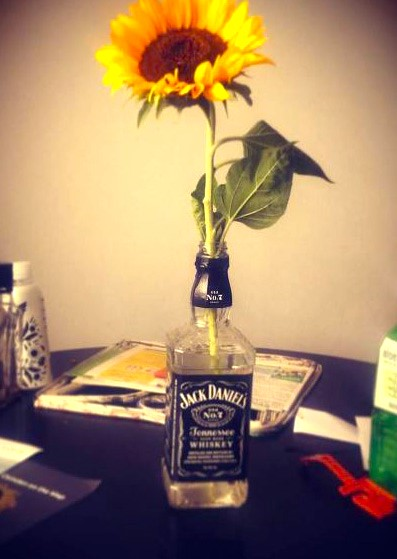
La prima tela
Dopo una notte insonne, alle tre del mattino mi piazzai il cavalletto piccolino da scrivania, presi i colori e decisi di rappresentare il sogno che avevo appena fatto.
Era un periodo difficile, e i pensieri nella notte non mi davano pace. Ho sempre messo da parte me stesso purché gli altri stessero bene; eppure mi sono ritrovato in faccia l'incontrastabile realtà che, per quanto tu ci voglia provare, non potrai mai piacere a tutti, semplicemente per il fatto che non tutti vogliono essere aiutati per come tu intendi, se per te un percorso è sbagliato, non per forza devi cercare di correggerlo.
In quei sogni mi si presentò questo mondo, queste figure. Un viso pallido e freddo, una benda volutamente posta sugli occhi per dormire o per non vedere, solo un piccolo spiraglio per accendersi una sigaretta, sempre in bocca, unica parte del corpo calda per il fumo che riempiva i polmoni e usciva per le labbra, lentamente, strisciando tra le curve del viso: quasi un sorriso, quasi in disprezzo. Non voleva vedere.
Scuma era un mio modo di dire per indicare cose inutili, bizzarre, che apparentemente non hanno motivo di esistere se non per indicare che qualcosa sta avvenendo o è avvenuto.
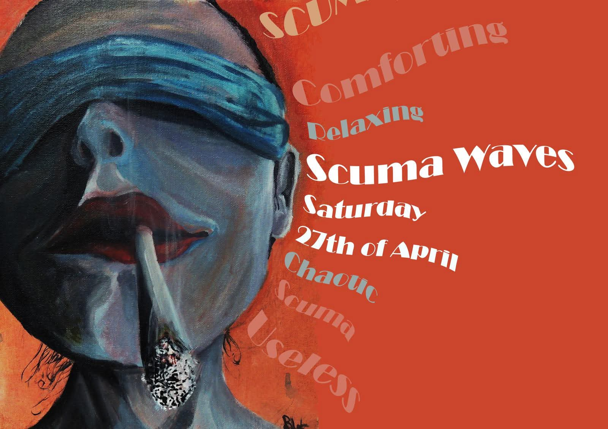
La mia Londra
Gli ultimi anni a Londra sono stati per me qualcosa di più di un periodo di vita all'estero. Sono arrivato in un momento in cui avevo bisogno di crescere, di cercare nuove possibilità e, soprattutto, di capire cosa volessi davvero fare.
Londra mi ha dato l'occasione di incontrare persone, ambienti e situazioni che hanno lentamente riacceso in me una passione che avevo sempre avuto: l'arte. Ho iniziato a guardarla con occhi diversi: non più soltanto come qualcosa da ammirare, ma come un mondo da conoscere, sperimentare e, un giorno, abitare.
Il castello di Somerset House era come un posto incantato dove avvenivano magie tutti i giorni, ed io incredibilmente ne gestivo alcune: creavo per gli artisti e di conseguenza assorbivo da loro ciò che amavo. Era uno scambio continuo, giorni intensi e intrinsechi di tutto.
Io osservavo, ascoltavo, imparavo. E poi cercavo di portare tutto a casa. La curiosità è diventata studio, lo studio è diventato sperimentazione, la sperimentazione è diventata sempre più necessità di creare.
Forse non avevo ancora trovato la mia strada. Ma avevo finalmente iniziato a percorrerla.
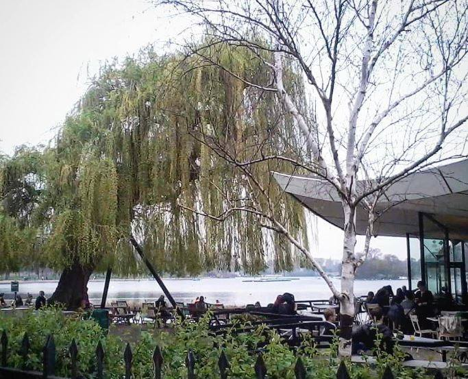
2007
Prima è stata una baracca. Poi un rifugio. Oggi è un laboratorio. Ma in fondo, è sempre stato un luogo dove costruire qualcosa.
Questa piccola baracca nasce e cresce negli anni del periodo universitario, nel 2007. Erano le classiche estati in cui il prurito alle mani di chi ama creare diventa quasi impossibile da fermare.
La costruimmo io e i miei fratelli utilizzando quasi esclusivamente materiale di recupero: parti di un vecchio tetto smontato, pali del telefono caduti e lamiere di scarto. Dopo circa due mesi di lavoro, durante l'estate, avevamo tirato su quello che sarebbe diventato un piccolo centro di incontro nel mezzo della campagna.
All'inizio era soprattutto il nostro rifugio per bische, grigliate e party. Poi, poco alla volta, tutto intorno iniziò a cambiare: la campagna divenne un giardino, comparvero un piccolo laghetto, piante e fiori, e quella che era nata quasi per gioco iniziò ad assumere una propria identità.
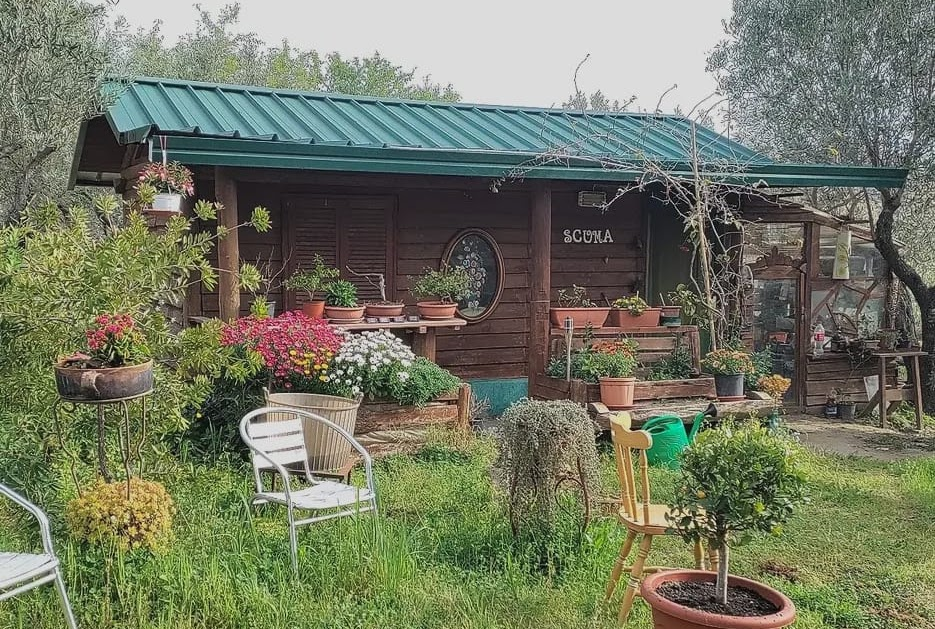
Dal 2019
Nel 2019, al mio ritorno da Londra, e successivamente durante il periodo del Covid, quello spazio cambiò completamente funzione. Avevo finalmente tempo, voglia di sperimentare e soprattutto la possibilità di lasciare strumenti e opere sempre pronti.
La piccola baracchina diventò così, a tutti gli effetti, il Laboratorio Scuma. Poi semplicemente Scuma Lab: il luogo in cui potevo entrare e iniziare a creare senza dover ogni volta preparare tutto da zero. Ci sono stati giorni in cui riuscivo a realizzare sei o sette opere, completamente immerso nel lavoro. Avevo persino un lettino e un lavandino e, qualche volta, finivo per dormirci dentro.
Scuma Lab è ancora lì, tuttora operativo, e continua a cambiare insieme a me. D'inverno diventa il mio laboratorio a tutti gli effetti. Ma non è soltanto uno spazio dove dipingo: nel tempo si è trasformato anche in un luogo per workshop, incontri, riunioni strategiche e sperimentazioni.
Un piccolo spazio nato da materiali di recupero, costruito con i miei fratelli quasi per gioco, che negli anni è diventato qualcosa di molto più importante. Non è semplicemente il luogo dove realizzo le mie opere: è il luogo dove le idee prendono forma.
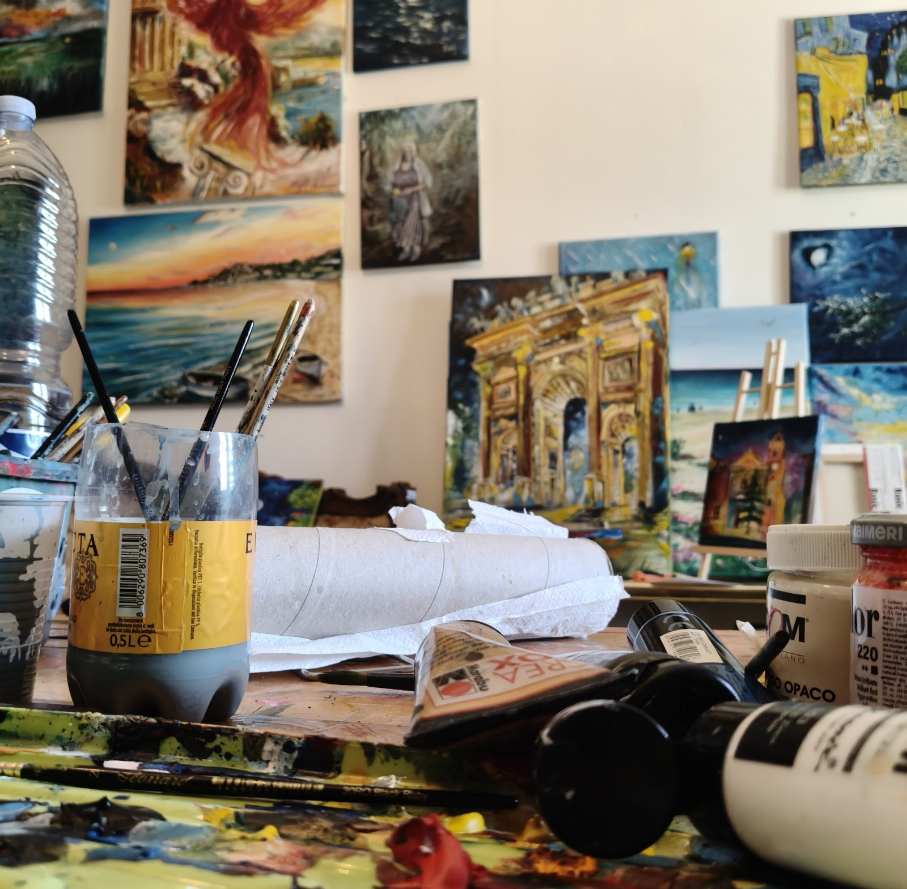
Progetti ed eventi

Su commissione
Dei miei murales sempre in diverso stile, ricerca iconografica e storica.
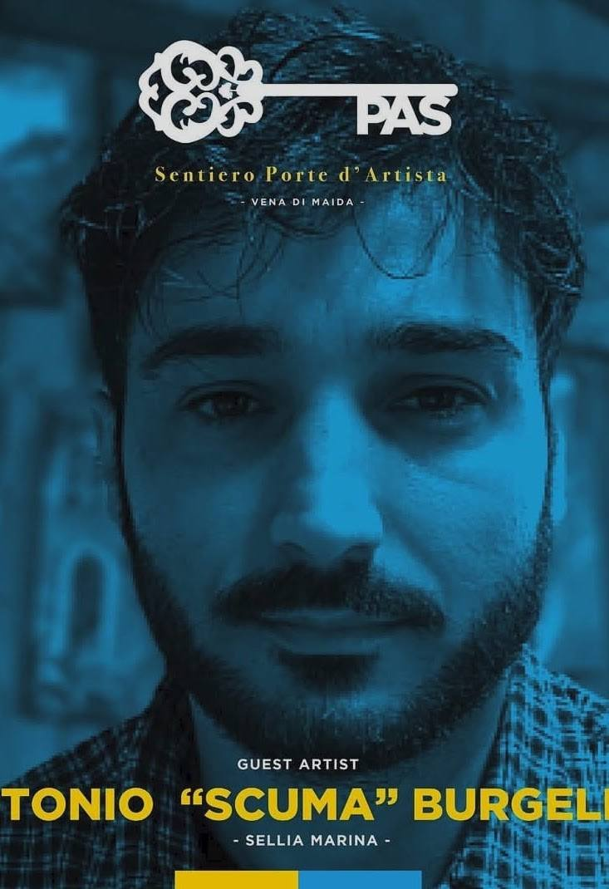
Progetto itinerante
Rigenerazione urbana nei vecchi borghi in decadenza: le porte in disuso vengono recuperate, ammodernate e trasformate in opera d'arte.
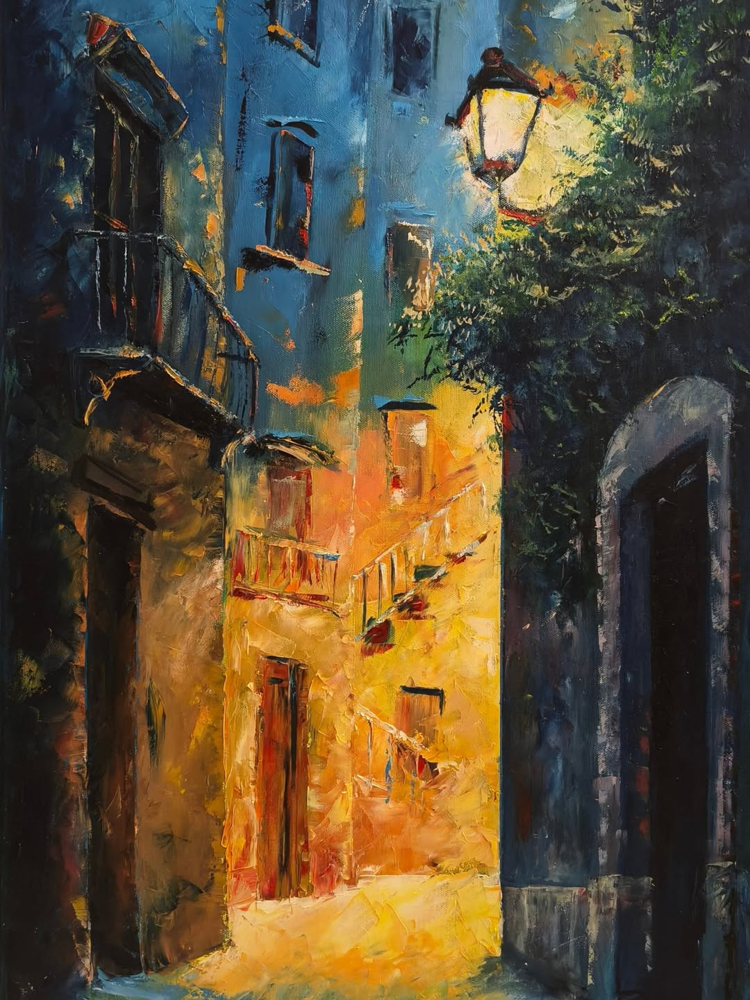
Progetto personale
Un'analisi in stile antico dei borghi visitati: studio e produzione en plein air sul posto, workshop, e a chiusura una mostra personale con le opere che raccontano l'identità del paese.
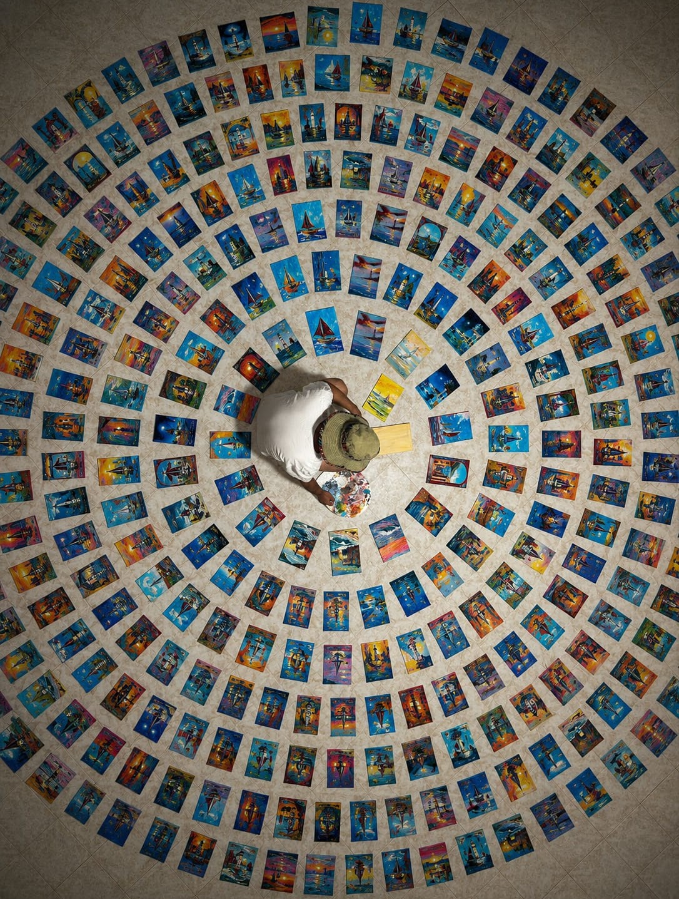
Curatela
Oltre che artista mi cimento nell'organizzazione e nella cura degli eventi: mostre collettive, estemporanee, workshop, interviste e dirette.
Gallerie
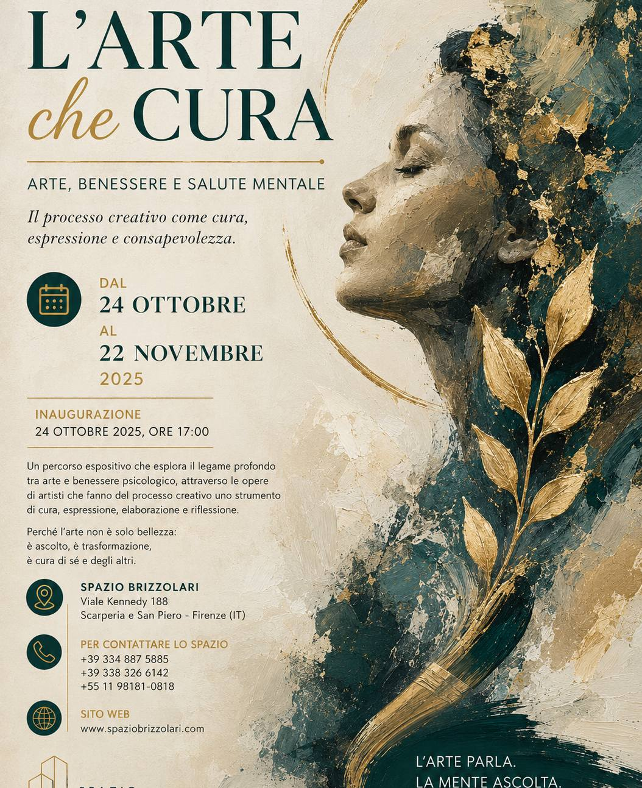
Dal 24 ottobre al 22 novembre 2025
Spazio Brizzolari · Viale Kennedy 188, Scarperia e San Piero (Firenze)
Un percorso espositivo sul legame fra arte e benessere psicologico, attraverso le opere di artisti che fanno del processo creativo uno strumento di cura, espressione e riflessione.
Pagina artista
Pagina artista.
Pagina artista
Pagina artista.
Aprile 2026 · stampa
Articolo dedicato su La Ciminiera, rivista del Centro Studi Bruttium di Catanzaro.
Contatti
Lo studio
Scuma Lab
Sellia Marina (CZ)
Calabria, Italia
Per collaborazioni, murales su commissione, workshop e progetti di rigenerazione urbana.